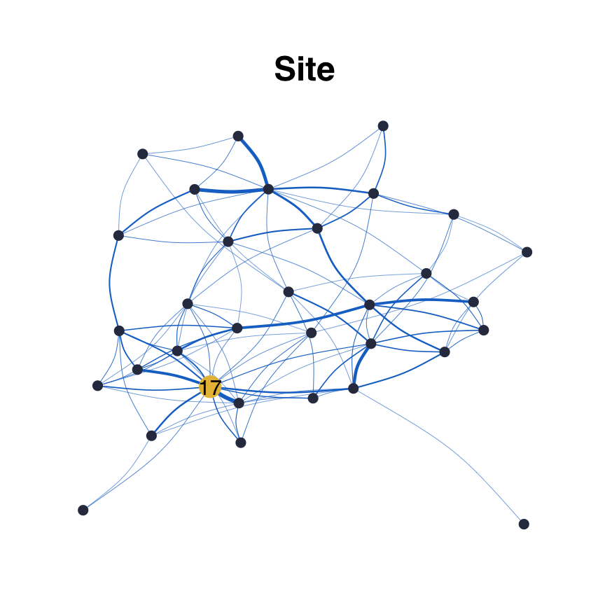
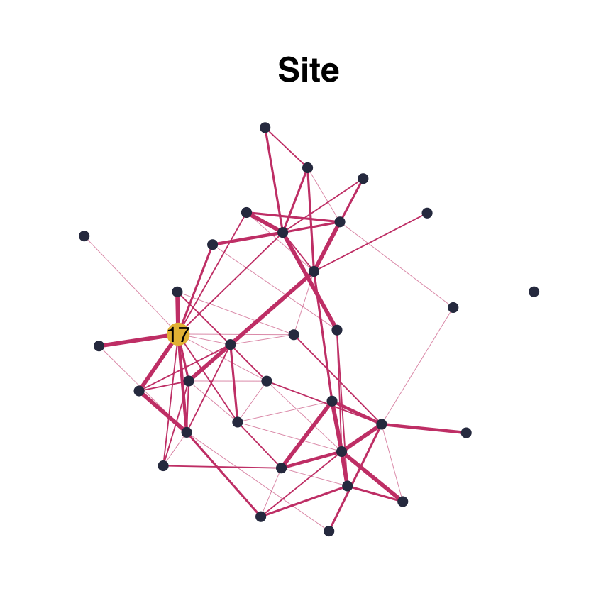
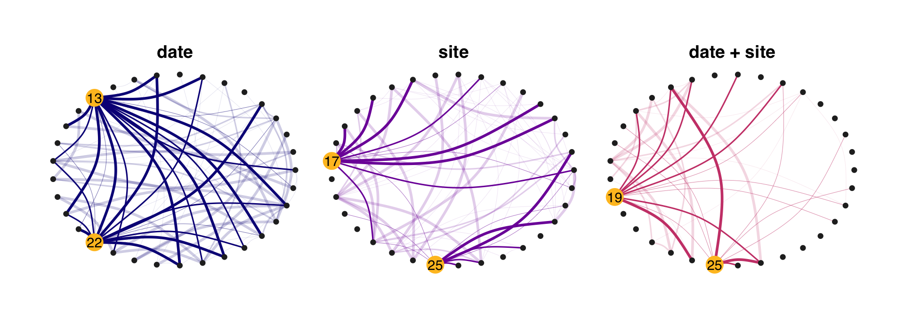

Fatala fishes
Fatala_Net.RmdThis is a basic example which shows you how to infer a network, using Barans95 data from the ade4 package.
Data
library(ade4) library(tibble) data(baran95) counts = as.matrix(baran95$fau) covar = as_tibble(baran95$plan) n = nrow(counts) p = ncol(counts)
head(counts)
## AMA CAS CHI CHL CJO CST CTR CWA CYS DAF EFI ELA GDE GME HFA HFO IAF LFA LGR
## 1 0 2 0 3 0 0 0 0 0 0 71 1 5 6 0 0 7 3 3
## 2 0 1 0 0 0 0 0 0 0 0 118 2 3 0 0 0 8 1 7
## 3 0 2 0 3 0 0 0 0 0 0 69 0 6 2 0 0 8 3 0
## 4 0 0 0 2 0 0 0 0 0 0 56 0 0 0 0 0 1 0 2
## 5 0 0 0 0 0 0 0 0 3 0 0 1 1 0 0 0 2 2 5
## 6 0 0 0 0 0 0 0 0 5 0 0 0 2 0 0 0 0 0 9
## LNI PAA PBR PEL PJU PLE PMO POQ PPA PQQ PTY SEB TIN TLE
## 1 0 0 5 2 9 26 0 4 0 0 0 22 0 2
## 2 0 0 0 0 0 113 0 1 0 0 1 18 0 1
## 3 0 0 1 0 3 0 0 1 0 0 0 3 0 0
## 4 0 0 0 0 0 0 0 0 0 0 0 15 0 0
## 5 0 0 0 3 0 0 0 4 0 0 3 0 0 0
## 6 0 0 2 4 4 0 2 0 0 0 1 0 0 0head(covar)
## # A tibble: 6 x 2
## date site
## <fct> <fct>
## 1 apr93 km03
## 2 apr93 km03
## 3 apr93 km03
## 4 apr93 km03
## 5 apr93 km17
## 6 apr93 km17Fit PLN model
This creates a PLNmodels object
##
## Initialization...
## Adjusting a PLN model with full covariance model
## Post-treatments...
## DONE!Run EMtree function
##
## Likelihoods: -45.40118 , -45.33161 , -45.33147 , -45.33139 ,
##
## Convergence took 0.23 secs and 4 iterations.
## Likelihood difference = 8.032151e-05
## Betas difference = 2.251246e-09str(output)
## List of 6
## $ edges_prob : num [1:33, 1:33] 0 0.00703 0.02019 0.14676 0.0321 ...
## $ edges_weight: num [1:33, 1:33] 0 0.000946 0.000946 0.000948 0.000947 ...
## $ logpY : num [1:4] -45.4 -45.3 -45.3 -45.3
## $ maxIter : num 4
## $ norm.cst : num 2.07e-50
## $ timeEM : 'difftime' num 0.231255054473877
## ..- attr(*, "units")= chr "secs"Foster robustness with resampling :
resample_output<-ResampleEMtree(counts=counts, covar_matrix = covar$site , S=5, maxIter=10,cond.tol=1e-8, cores=1)
##
## S= 1
## S= 2
## S= 3
## S= 4
## S= 5str(resample_output)
## List of 3
## $ Pmat : num [1:5, 1:528] 0.00118 0.00288 0.00504 0.01934 0.00641 ...
## $ maxIter: num [1:5] 3 6 3 6 6
## $ times : 'difftime' num [1:5] 0.169563293457031 0.296403169631958 0.167448997497559 0.291896343231201 ...
## ..- attr(*, "units")= chr "secs"Several models with resampling :
library(parallel) tested_models=list(1,2,c(1,2)) models_names=c("date","site","date + site") compare_output<-ComparEMtree(counts, covar_matrix=covar, models=tested_models, m_names=models_names, Pt=0.15, S=3, maxIter=5,cond.tol=1e-8,cores=1)
##
## model date
## S= 1
## S= 2
## S= 3
## model site
## S= 1
## S= 2
## S= 3
## model date + site
## S= 1
## S= 2
## S= 3str(compare_output)
## tibble [1,584 × 4] (S3: tbl_df/tbl/data.frame)
## $ node1 : chr [1:1584] "1" "1" "2" "1" ...
## $ node2 : chr [1:1584] "2" "3" "3" "4" ...
## $ model : chr [1:1584] "date" "date" "date" "date" ...
## $ weight: num [1:1584] 0 0 0 0 0 ...Visuals
From EMtree output
Simple network:
library(ggraph) library(tidygraph) library(viridis) set.seed(200) edges_prob<- output$edges_prob edges_prob[edges_prob<2/p]<-0 draw_network(edges_prob,title="Site", pal="dodgerblue3", layout="nicely",curv=0.1)$G

From ResampleEMtree output
df<-freq_selec(resample_output$Pmat,Pt=2/p+0.1) draw_network(df,"Site", layout="nicely")$G

df[which(df<1e-6)]=0 draw_network(df,"Site", layout="nicely")$G
draw_network(df,"Site", layout="nicely")$graph_data
## # A tbl_graph: 33 nodes and 74 edges
## #
## # An undirected simple graph with 3 components
## #
## # Node Data: 33 x 8 (active)
## btw bool_btw bool_deg deg title name label finalcolor
## <dbl> <lgl> <lgl> <dbl> <chr> <int> <chr> <lgl>
## 1 12.5 FALSE TRUE 6 Site 1 "" FALSE
## 2 22 FALSE TRUE 6 Site 2 "" FALSE
## 3 0 FALSE TRUE 1 Site 3 "" FALSE
## 4 0 FALSE TRUE 3 Site 4 "" FALSE
## 5 0 FALSE TRUE 2 Site 5 "" FALSE
## 6 0 FALSE TRUE 3 Site 6 "" FALSE
## # … with 27 more rows
## #
## # Edge Data: 74 x 6
## from to weight btw.weights neibs title
## <int> <int> <dbl> <dbl> <lgl> <chr>
## 1 1 7 0.4 1.25 FALSE Site
## 2 1 8 0.2 1.79 FALSE Site
## 3 1 11 0.8 0.811 FALSE Site
## # … with 71 more rowsFacet for plotting several models in one shot
Comparing network by eye is difficult. In particular, choosing the right layout to do so is often troublesome. Here by default, the circle layout is used so that differences in density are easily seen.
compar_graphs(compare_output,alpha=TRUE)$G

However, the user can decide another layout. The nodes position is preserved along the networks.
compar_graphs(compare_output,alpha=FALSE, layout="nicely", curv=0.1, base_model="site")$G